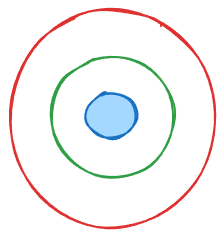
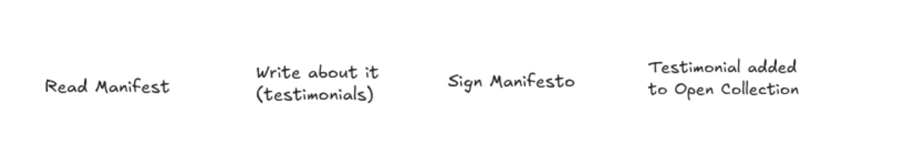

An unconference session — you shape what happens next
ATProto (Bluesky) and ActivityPub (Mastodon, the Fediverse) share more than they compete.
Yet the two communities rarely sit in the same room — let alone work toward shared goals.
This session is an attempt to change that.
We've identified three areas where cooperation could unlock real structural gains — but we don't have the answers. That's why you're here.
1 — Identity bridges
2 — Shared data reuse schema
3 — Moderation infrastructure funding
Identity systems differ between the two protocols, but alignment at the protocol level is within reach.
Scientists need to carry their scholarly reputation across protocols without re-authenticating their entire career.
Both ecosystems are wrestling with how users consent to data indexing and reuse.
A common schema would avoid fragmentation and enable cross-protocol research infrastructure.
Both ecosystems are developing shared moderation tooling. Funding and political advocacy are largely running in parallel.
We're co-authoring a short position paper to establish rough consensus on common values across AT and AP communities.
The goal: a document short enough to travel, coherent enough to survive open contribution, and credible enough to reach policy circles.


Instead of asking gatekeeping institutions to "adopt open protocols," how do we give them a reason to become celebrated technology endorsers — and who collectivizes academia's problems if not them?
The floor is yours.